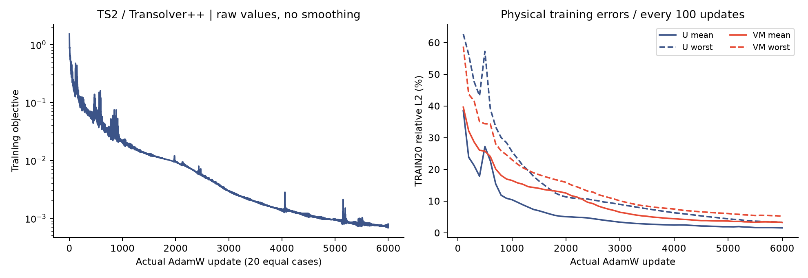
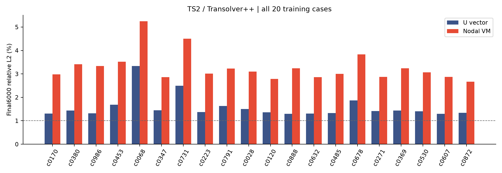
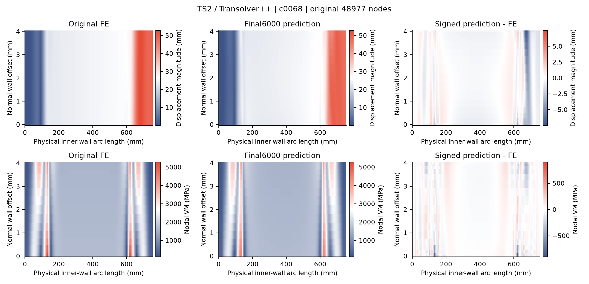
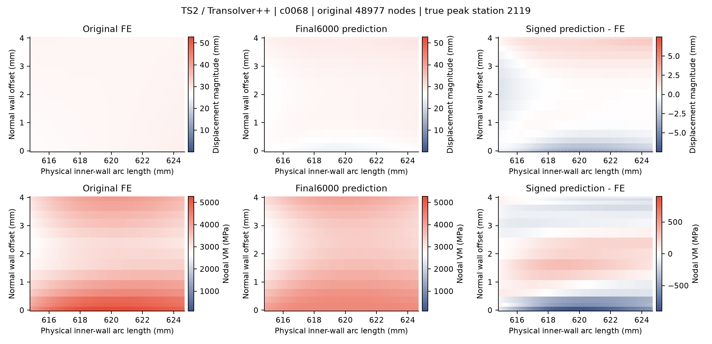

6000 actual AdamW updates, 20 equally weighted full cases per update, 48977 nodes, original56 input / 4 output, FP64. 981172 active parameters. Best-train update 6000 is supplementary.
Single-seed training fit only; no heldout generalization or universal causal claim. Raw negative VM is preserved. Every case U and VM <=1%: False.
| Final6000 metric | Mean (%) | Worst (%) |
|---|---|---|
| U_relative_L2 | 1.579956 | 3.334699 |
| VM_relative_L2 | 3.281954 | 5.245473 |
| peak5_VM_relative_L2 | 2.829487 | 8.023191 |
| VM_max_relative_error | 2.825807 | 16.455368 |
| VM_at_true_peak_relative_error | 2.659819 | 17.129908 |
Negative VM cases: 0; minimum 6.251854 MPa. No clipping.
Curves are raw; native-node field display uses nearest shading. Original 2817 update history prefix is verified unchanged.
Per-case CSV (final + best) | Independent CPU audit | Display provenance



